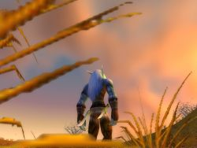

Joué par :
Aëdelagen Joué par :
[ Information masquée ] Age : 500
Lieu de naisance : Astranaar
Signe de naissance : Tigre
Sexe : Homme
Race : Elfe
Faction : Alliance
Formation : Voleur
Niveau : 14
Artisanat 1 : Herboriste
Artisanat 2 : Mineur
Description : Chasseur de Démon Kaldorei en formation.
Se trouve actuellement en mission dans les royaumes de l'Est
Troisième Ère [3]
Lune de la Force [3]
Décade du Panda
Décade du Gorille [2]
Le reveil
"Ou ... ou suis-je ?"
Telles furent les premieres paroles d'Aëdelagen lorsqu'il s'éveilla de son coma qui avait duré quatre ans. Quatre années passés a se battre contre des cauchemars.
Son esprit avait été attaqué lors de la bataille du mont Hyjal. Un Eredar l'avait attaqué et avait laissé qu'une ame promise a une eternité de torture. Ses reves étaient peuplés de Démons prenant plaisir a exercer toute sorte de douleur sur son esprit.
Mais c'était fini.
On l'avait gardé dans le temple d'Elune afin que son esprit s'apaise. En vain. Chaque instant passé dans son coma avait été souffrance. Il ne savait par quel miracle ses tortionnaires avaient abandonnés son ame.
La pretresse d'Eune qui le veillait lui expliqua tout ce qu'il s'était passé durant son absence. L'alliance avec les races de l'Est, Illidan, l'ascension de Fandral...
"Je..." Aëdelagen ne put terminer sa phrase. Sa voix s'éteignait et son corps était paralysé. De le magie se dit-il
Soudain un humain vétu de noir surgit de l'ombre. Plus petit qu'un elfe il émanait néanmoins de lui une impression de puissance. On pouvait sentir le pouvoir émaner de lui. Son visage était caché dans l'ombre de sa capuche.
"Est-il guéri? Demanda-t-il.
-Il lui faut encore un peu de temps mais je pense que ça ira" Elle regarda l'homme et esquissa un sourire."Nous avons bien fait de tenir a l'oeil celui la. Il semble avoir une certaine resistance..."
"Parfait" L'homme la coupa net et lui jeta un regard meurtrier. Il pointa son doigt vers Aëdelagen et prononça une formule devant l'elfe de la nuit impuissant. La silhouette du kaldorei allongé disparu dans les ombres.
Et les tenebres vinrent...
Explications & Premiere mission
La paix.
Cela faisait des années qu'Aëdelagen n'avait pas connu le repos. L'incantation de l'homme l'avait plongé dans un sommeil sans reves, sans démons...
"...l'envoyer dans les royaumes humains." Ce fut les seules bribes de conversation qu'Aëdelagen put capter lorsqu'il se reveilla. L'homme en noir semblait parlait tout seul mais l'elfe sentit une presence magique dans la piece.
La piece ou il était allongé lui sembla bizarre au début. Toute en bois, il sentit quelquechose d'etrange. Il comprit ensuite que le tanguage regulier de la piece lui faisait dentir qu'il était dans un bateau.
Mais son attention était concentré sur l'humain masqué qui était assis a son chevet. La presence avait, quant a elle, disparue.
"Tu est enfin reveillé." L'homme avait repporté son attention sur le kaldorei au moment ou il s'était éveillé.
Aëdelagen tenta de parler mais en vain. Son corps était toujours paralysé. Il se demanda d'ou cet humain pouvait tirer tant d'energie magique pour maintenir un etre dans le sommeil.
"Mon sort de mutisme t'affecte toujours. Il faut que tu sois calme pour que je t'explique tout. Tu as été choisis par notre ordre de par ta resistance aux énergies démoniaques. Tu est l'un des seuls a avoir survecu aux tourments démoniaques. Normalement ton esprit devrait etre en miette et il ne devrait rester de ton corps qu'une coquille vide.
Nous pensons que les démons se sont lassés de jouer avec un esprit qu'ils ne pourraient briser et sont repartis servir leurs maitres.
Notre ordre fut fondé apres la chute d'Archimonde. Notre but est de faire en sorte que le monde redevienne pur en y chassant toute trace démoniaque.
Nous formont depuis ces quatre années des tueurs de démons qui s'efforcent a la tache.
Nous aimerions que tu te joigne a nous. Ton...potentiel pourrait nous servir.. Maintenant parle !"
L'homme claqua ses doigts.
"Je refuse !" Aëdelagen en avait assez. Il aspirait a continuer sa vie hors des guerres de ce monde. Il avait subit sa part d'horreur!
"Je comprends que tu refuse mais attends. Aënarel !"
Une sphere lumineuse apparue d'entre les mains de l'homme. Elle se dirigea vers la poitrine de l'elfe jusqu'a ce qu'elle se fondit en lui malgré ses protestations.
Soudain tout bascula dans l'esprit du kaldorei. Il revit les démons detruire des villages, corrompre les forets et manipuler les esprits. Puis une immense douleur de fit en lui.
"Aaaaaaaaaaaaaaaaaaaah !!" La sphere blanche se fit repousser par son esprit. Aëdelagen la vit partir de son corps puis exploser dans une lumiere aveuglante.
"Alors ?" L'homme en noir ne semblait nullement troublé par la disparition de l'esprit.
"Je ... j'accepte votre proposition." L'esprit avait declenché en lui un haine insatiable envers les démons. Il avait entrevu le passé certe mais aussi les voies du futur. Il avait vu la Désolation.
De l'humain se degageait une aura d'intimidation. Aëdelagen avait lu des recits ou des personnages usait de pareils sorts. Il permet a un homme d'eviter d'etre interrompu meme par les plus bavards.
L'homme esquissa un sourire."Bien tes affaires sont rangés dans cette malle. Nous naviguons actuellement vers les Royaumes de l'Est. Ta premiere mission est la suivante : la Lame Ardent, une organisation dont le but est de faire revenir la Légion, a recemment eu des contacts avec la confrerie Defias. C'est un ordre de voleurs sevissant dans les royaumes humains.
Tu dois te rendre a la Marche de l'Ouest, a la Tour des Sentinelles. Tu y recevras des instructions pour infiltrer la Confrerie et verifier si ces contacts avec la Lame ardente son vrais.
Maintenant, dors !"
Aëdelagen ne put esquisser le moindre geste qu'il sombrait a nouveau dans les tenebres.
Décade de l'Ours [1]
Royaumes de l'Est
Aëdelagen se reposait de sa journée dans une auberge de Stormwind, la capitale humaine.
Il avait passé sa journée, comme les precedentes, a assassiner des bandits portants le masque defias afin de "rendre plus sur les routes de la Marche de l'Ouest". Je pourrais en tuer pendant des mois que cette region ne serait pas plus sure. Si nous ne nous attaquons pas directement a leur chef, jamais nous ne pacifierons la marche. Si seulement on savait ou se terre Van Cleef. Aëdelagen s'était reveillé quelques jours plus tôt dans une ruelle de Stormwind. On avait du le laisser la apres l'avoir emmené du bateau.
Le kaldorei se sentit déboussolé dans ces paysages nouveau. Il n'avait jamais connu de ville aussi bruyante que la capitale humaine, la forêt d'Elwynn n'était visiblement pas habitée par les esprits contrairement a celles de Kalimdor. Il n'avait jamais rien qui ressemblait a la Marche de l'Ouest. Une region de cette taille utilisée uniquement pour cultiver les ressources était quelque chose de nouveau pour l'elfe.
On lui avait laissé un message indiquant le contact qui lui donnerait ses missions. C'était un gnome étrange. Il ne voulait pas donner son nom alors il dit a l'elfe de l'appeler Vifépée.
Vifépée rencontra Aëdelagen dans sa chambre cette nuit la.
"Il faut que vous partiez." Le gnome avait dit cette phrase en lançant des regards suspicieux un peu partout dans la piece, comme s'il craignait qu'un espion invisible s'y trouvât."Il y a un changement de plan. Les démons ont attaqués nos principaux agents dans la region. Voud devez partir en vitesse pour les Royaumes Nains. Une fois a Ironforge vous pourrez lire sur ce papier la destination qui vous attends. Maintenant partez et vite !" Le gnome disparut dans un nuage sombre. Aëdelagen ne put placer un mot. En presence de membres de l'Ordre mysterieux auquel il avait adhéré il avait toujours l'impression de n'avoir plus de langue pour parler. L'elfe soupçounnait que Vifépée ne faisait qu'user d'artifices car il n'avait jamais senti de magie en lui. L'homme sombre en revanche irradiait presque de magie.
Le voyage vers Ironforge fut d'une grande angoisse mais rapide. Il avait cru plusieurs fois avoir senti une presence maléfique derriere lui mais quand il se retournai la ruelle était vide. Il prit le Tram des Profondeurs pour quitter la capitale humaine. Le voyage ne prit pas plus de 10 minutes et cela surpris l'elfe. Ces gnomes sont vraiment étonnants. Il peuvent creer des choses veritablemment revolutionnaire mais la plupart de leur talent est gaché par la quantité d'inventions inutiles qu'ils fabriquent.
A Ironforge Aëdelagen chercha le papier dans sa poche. Il se placa dans sa main comme par enchantement. Il lut sa destination.